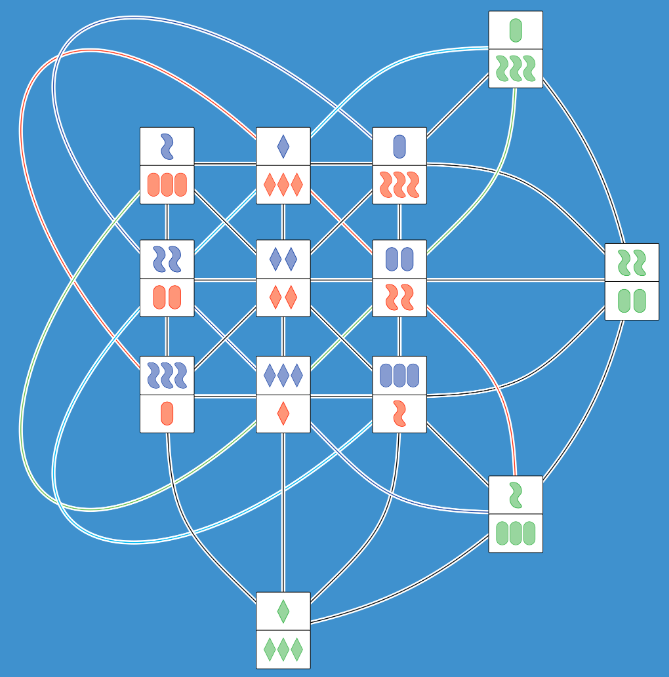
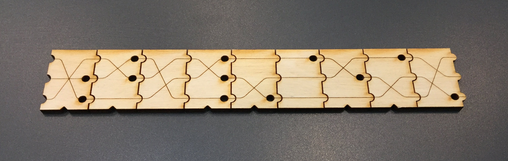

SET
I am currently working on a project generalizing the card game SET. Below you can find links to various versions we have created and other material.
Articles, Slides and Talks
We published an article in Math Horizons about the geometry behind projective SET.
Here are some slides and a video for a talk Catherine Hsu and I have given on this topic.
SET decks
Instructions on how to play each version.
Printable Projective decks
Printable Non-abelian decks
Online Versions
The fantastic mathematician Gabriel Dorfsman-Hopkin made a version of S3 SET and S4 SET that you can play online!